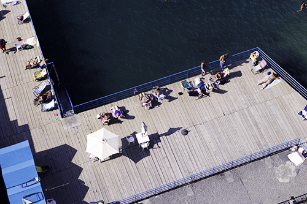

"public" beach
sorrento,
italy
sorrento,
italy
Hola! my name is Jenn, and I am currently in my fourth year at Northeastern University as a Computer
Science and
Media Art
combined major within the Khoury College of Computer Sciences. As of Fall 2019, I am looking for co-op
or
internship
opportunities
starting in January of 2020. I am open to anything from back-end to front-end, design work, or a mixture
of all
of
it. I love
service learning so any chance or opportunity I get to help my community and do work for social impact
is
definitely
a plus. I am
definitely looking to move outside of the Greater Boston area (across the country or abroad :^))
I am an avid traveler, even if it means spending a straight 31 hours on planes, trains, and hard airport
benches
(because that's what it takes to get to Burma). I'm a big fan
of bread and love to bake (against my doctor's advice). If I had more time and I could choose more
careers, I'd
also
want to
try wood joinery and furniture, but right now the resources and opportunities point to media/digital
content.